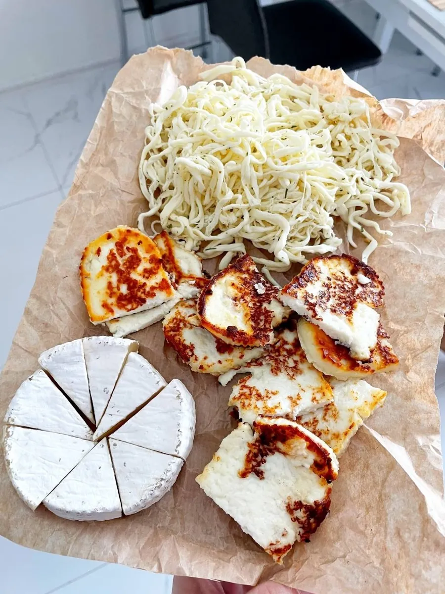
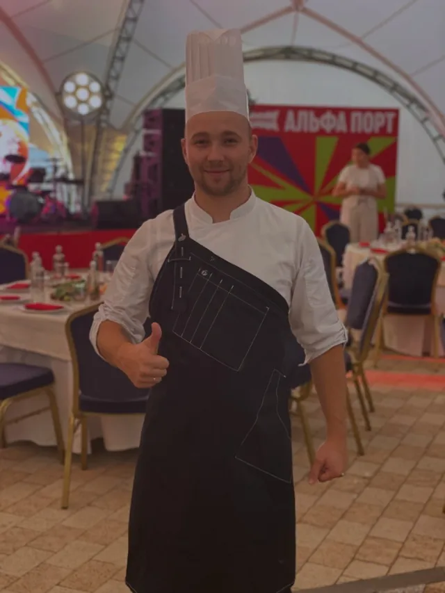
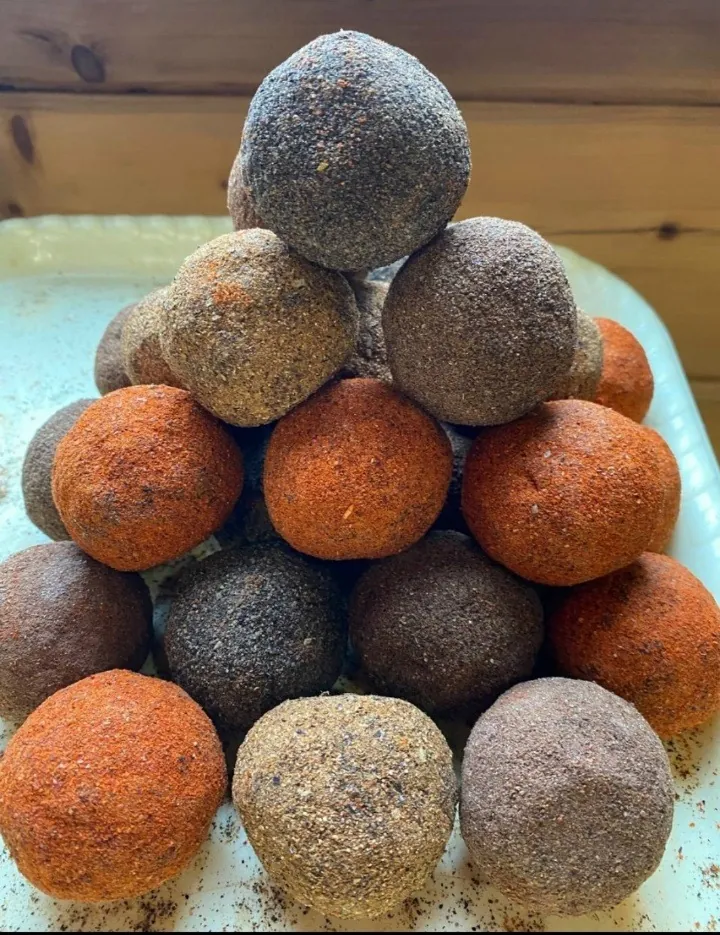
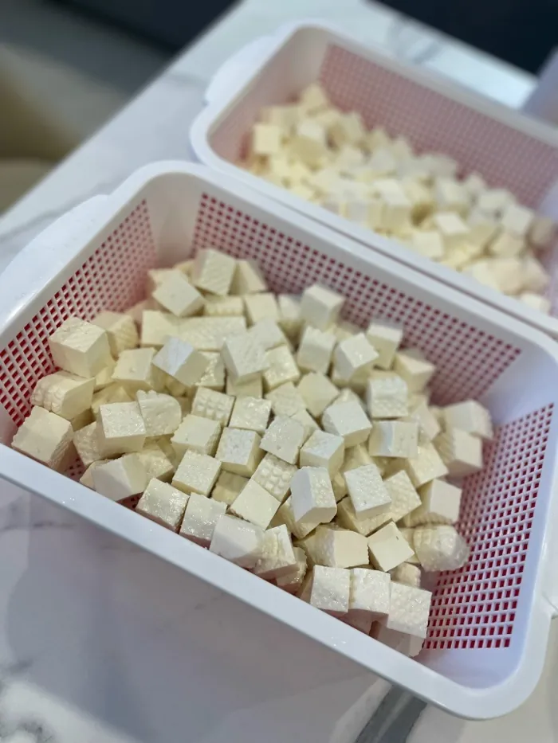
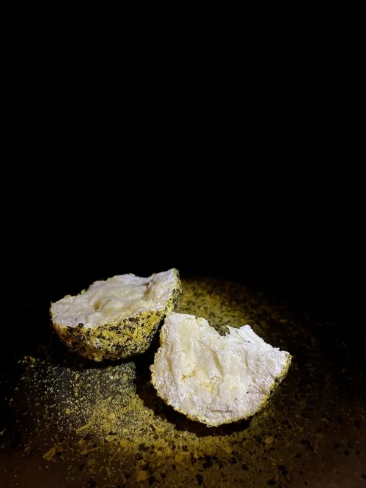
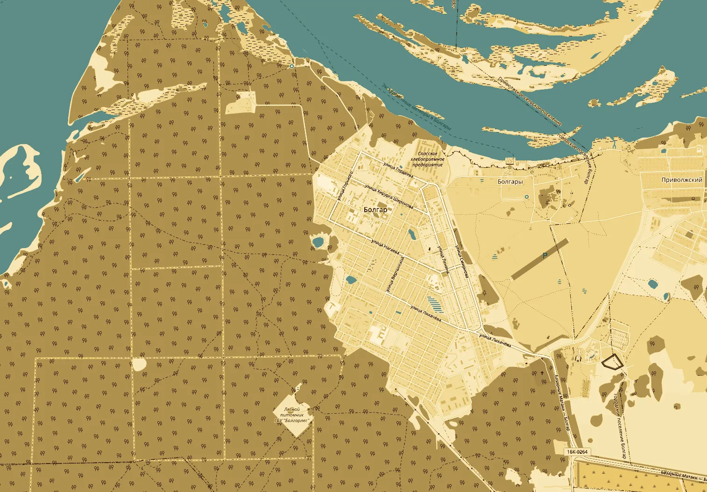

Попробовали ваши сыры. Даже не знаю, что сказать, все безумно вкусные. Белпер бесподобный, но он точно к вину, у мятного интересное послевкусие, трюфельный тоже имеет интересный вкус, чечил мы уже не первый раз пробуем, он на все случаи жизни. Если кто-то жалеет денег на ваши сыры, вот зря, они того стоят.
г. Болгар, Татарстан
Спасский сыр
Домашняя сыроварня Александра. Фета и шевр в масле, Белпер Кнолле, узелки и качокавалло из фермерского молока. Небольшими партиями, без консервантов.
- 4ингредиента в составе
- от 130 ₽за 100 г сыра
- от 30 днейзреет Белпер Кнолле
- 15отзывов в группе



Фермерское молокоКоровье, от местных хозяйств
Чистый составМолоко, закваска, фермент, соль
Сыр зреет сколько нужноМолодой Белпер не продаём
Отправка в другие городаВ вакууме, бережно упакуем
Сыры и цены
Цены из прайса сыроварни. Сыр варим партиями, поэтому наличие лучше уточнить. Отметка «В Булгарочке» значит, что сорт привезли в магазин с последней поставкой.
Соберите сырную тарелку
Выберите до пяти сыров. Мы подскажем, к чему подойдёт ваша тарелка, и посчитаем примерную сумму. Готовый набор можно сразу отправить в заявку.
Добавьте первый сыр на доску
Примерно 0 ₽
Доска пока пустая

Сыровар Александр
Чтобы варить сыр, недостаточно следовать рецепту. Сыроварение это целая технология. Я прочитал много литературы, учился по вебинарам, прохожу профессиональные курсы и продолжаю отрабатывать новые сыры. Мои родные и близкие забыли, что такое сыр из магазина.
Молоко
Берём фермерское коровье молоко. Партии небольшие, чтобы за каждой следить.
Закваска и фермент
Кроме них в сыре только соль. Ни консервантов, ни красителей.
Форма и специи
Фету режем кубиками в масло с травами, узелки вытягиваем и приправляем хмели-сунели, шевр и Белпер обваливаем в специях.
Созревание
Белпер Кнолле выдерживаем минимум месяц, качокавалло зреет на полке. В жару делаем паузу, а не компромисс.

Белпер Кнолле не режут
Это твёрдый швейцарский сыр в чёрном перце. Ножом его не нарезать, он крошится, поэтому шарик раскалывают. Твёрдый, но тает во рту. Вкус становится ярче с каждой неделей выдержки.
Целый шарик хранится до года, если он не в вакууме и в холодильнике не слишком сухо. Подавайте к вину и на сырную тарелку.
Забронировать шарикИз сыроварни
Фотографии Александра из группы: партии, баночки, сыр на доске.
Что говорят покупатели
Отзывы из обсуждения и комментариев в группе ВКонтакте.
Если ты гурман сыров, то обязательно надо попробовать «Спасский сыр». Я взяла фету и шевр. Очень вкусно. Хочу теперь попробовать все сыры, которые делает Александр.
В Спасских сырах всё настолько продумано: соль, специи, сливочность, текстура. С какого сыра начать? Абсолютно с любого!
Вкусный, с лёгкой молочной кислинкой, консистенция приятная, рассыпчатая, легко разрезается и мнётся вилкой, идеален для салатов.
Пробовала у вас несколько сортов сыра. Всё вкусно. А шевр вообще шедевр.
Получила сыр, в полном восторге! Очень качественный продукт, чувствуется забота о вкусе. Рекомендую от всей души.
Белпер реально тает во рту. Вкусно! Рекомендую. Буду пробовать и другие сорта.
Сыр, сырок божественный. Спасибо за ваш труд! Едим по одному кубику, а шарики вообще делили.

Болгар © участники OpenStreetMapГде купить
Магазин «Булгарочка», г. Болгар
Свежие партии сыра привозим в магазин. О каждой поставке пишем в группе. Если нужен конкретный сорт, напишите заранее, отложим.
Открыть в Яндекс КартахДоставка в другие города
Упакуем аккуратно, при необходимости в вакууме, чтобы сыр дольше хранился. Подберём удобный способ: например, через Ozon. Уже отправляли сыр в Тольятти.
Под заказ
Адыгейский, моцареллу и чечил варим по предварительным заказам. На Белпер Кнолле из новой партии можно встать в бронь.
Частые вопросы
Из какого молока сыр?
Из фермерского коровьего молока. В составе только молоко, закваска, фермент и соль, плюс специи и травы в отдельных сортах.
Сколько хранится сыр?
Целый шарик Белпер Кнолле хранится до года в холодильнике. Фету и шевр в масле держите в холодильнике в закрытой баночке. Для отправки в другой город упаковываем в вакуум.
Что делать с маслом из баночки?
Им можно заправить салат. Масло пропитано травами и сыром, поэтому вкус у салата будет ярче.
Можно заказать заранее?
Да. Партии небольшие, поэтому многие сорта лучше бронировать. Напишите в сообщения группы или позвоните, Александр скажет, когда будет следующая варка.
Отправляете в другие города?
Да, по договорённости. Подберём способ доставки и упакуем так, чтобы сыр доехал в хорошем состоянии.
Почему летом сыра не было?
В сильную жару нельзя сварить сыр так, как мы привыкли. Мы предпочли сделать паузу, а не продавать сыр хуже обычного.
Заказать сыр
Оставьте заявку, Александр перезвонит, расскажет о наличии и договорится о том, как забрать сыр или отправить его в ваш город.